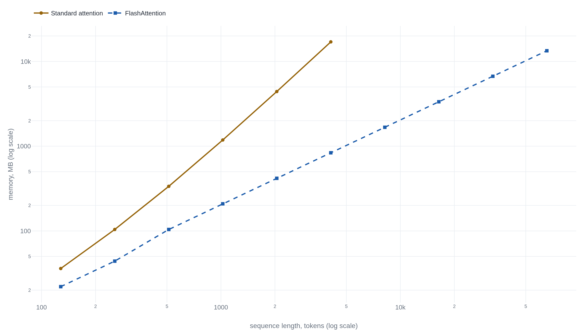

FlashAttention does more arithmetic to move less data
Dao and coauthors' 2022 paper tiles the score matrix through a GPU's on-chip memory, cutting one training configuration's HBM traffic from 40.3GB to 4.4GB and its runtime from 41.7 to 7.3 milliseconds.
Why this matters
Context windows have grown by orders of magnitude, and the paper usually credited for that gets misdescribed as an approximation, a shortcut, a way of trimming the arithmetic. None of that happened. FlashAttention runs the identical arithmetic a GPU always ran for attention, bit for bit, and gets faster by moving a big table of numbers less, not by skipping any of the multiplication. This lesson works through what that table is and why a GPU keeps two very different kinds of memory. Then it goes through what the 2022 paper and its two successors actually measured, including the numbers a fast retelling tends to flatten into one.
- 01
- An attention head is a weighted average that computes its own weights: how one attention head turns a comparison between two tokens into a number, the step this lesson builds on without re-explaining.
- 02
- The paper credited with starting the LLM era never trained a language model: the architecture FlashAttention speeds up, including the GPT-2 model this lesson's benchmarks use.
1,024 tokens make a table of 1,048,576 scores
"FlashAttention" comes from a 2022 paper by Tri Dao, Daniel Y. Fu, Stefano Ermon, Atri Rudra, and Christopher Ré, "FlashAttention: Fast and Memory-Efficient Exact Attention with IO-Awareness," presented at NeurIPS that year.1 It rewrites how attention runs on a GPU, without changing what attention computes.
Every attention step compares each token in a sequence with every other token and turns each comparison into a score. How one attention head turns a comparison into a number is its own subject, already taught in the mechanics of an attention head. What matters here is the shape of the result: for a sequence of N tokens, comparing every token to every other one produces a score for every pair, an N-by-N table.
The paper's own worked example uses a sequence of 1,024 tokens with 64-dimension attention, the size GPT-2 trains on.1 A table of scores for one head over one sequence at that length holds 1,024 times 1,024 entries: 1,048,576 of them. Stored in the 16-bit format the paper trains in, that's about 2.1 megabytes for a single head on a single sequence. That byte figure is arithmetic on the paper's own dimensions, not a number it states directly. Multiply it by dozens of heads and a batch of sequences, and the table standard attention builds and discards at every layer gets large fast. The paper's argument doesn't start with that table's size, though. It starts with where the table has to live while it's being built.
One A100 has about 20MB of on-chip memory and 40 to 80GB of HBM
A GPU keeps its numbers in two very different kinds of memory. One is on-chip SRAM: small, built directly into each processing core, and fast to read and write. The other is HBM, high-bandwidth memory: much larger, sitting off to the side of the compute cores, and much slower to reach. The paper calls a computation "memory-bound" when its runtime is set by moving data between these two tiers rather than by the arithmetic itself. That's exactly what it argues was happening to standard attention.1
The paper gives both tiers' sizes and speeds together. Each of an A100's 108 streaming multiprocessors carries 192KB of on-chip SRAM, "bandwidth estimated around 19TB/s." The whole GPU carries 40-80GB of HBM, "with bandwidth 1.5-2.0TB/s."1 Most of that checks out against NVIDIA's own documents. The 192KB figure and the 108 active processors both match NVIDIA's architecture whitepaper.2 Multiply 192KB by 108 processors and the chip carries about 20MB of on-chip memory in total, matching what the paper's own diagram of the two tiers gives for that number.1 NVIDIA's product datasheet confirms the HBM side too: 1,555 gigabytes per second on the 40GB card the paper benchmarks on, up to 2,039 on the 80GB version, inside the paper's own rounded range.3
The one figure that doesn't check out the same way is the 19 terabytes per second. The paper itself calls it "estimated" and credits two outside microbenchmarking papers, not NVIDIA.1 NVIDIA's architecture whitepaper confirms the capacity numbers above. It never states an on-chip bandwidth figure at all.2 Its only terabyte-per-second figures describe the link between GPUs, not the memory inside one. The size gap between the two tiers is a vendor spec on both ends. The speed gap rests on a vendor spec for one side and an outside estimate for the other.
FlashAttention never writes the full score table to HBM
FlashAttention's answer to that gap is not to skip any of the comparison. Algorithm 1 in the paper returns exactly the output standard attention does, softmax(QKT)V, "with no approximation."1 What changes is where the score table lives while it's being built. The paper describes that change as four moves, repeated for each block of the sequence in turn:
-
Load one tile
Pull one block of the key and value table into on-chip memory, alongside the block of queries already there.1
-
Score inside SRAM
Compute that block's scores entirely inside on-chip memory. The full N-by-N table these blocks add up to is never written out to HBM at all.1
-
Keep a running total
Update a running softmax sum and a running weighted output as each new block arrives. That keeps the normalization across the whole row correct without ever holding the whole row in memory at once.1
-
Recompute, don't store
In the backward pass, rebuild each block's scores from the same tiles instead of reading them back from HBM: extra arithmetic, traded for data the chip never has to move.1
That fourth step is why the trade of more arithmetic for less data is real, not a turn of phrase. The paper benchmarks a GPT-2 medium configuration: sequence length 1,024, 64-dimension heads, 16 heads, batch size 64, one A100. There, standard attention runs 66.6 billion floating-point operations. FlashAttention runs 75.2 billion, about 13% more, because of that recomputation.1 What FlashAttention removes is data movement, not arithmetic: 40.3 gigabytes of HBM reads and writes for standard attention on that same configuration, against 4.4 gigabytes for FlashAttention.1 The runtime for that configuration drops from 41.7 milliseconds to 7.3, a 5.7-times speedup, even though the chip does more math to get there.1
The paper reports four different speed numbers, not one
Runtime on one GPT-2 configuration is one number, not the number. The paper's speed claims come from four benchmarks, measuring different things against different baselines, and a retelling that averages them or repeats the largest one is combining figures the paper never combined.
| Measured | Configuration | Before → after | Change |
|---|---|---|---|
| Fwd+bwd | GPT-2 medium, one A100, seq. 1,024 | 41.7ms → 7.3ms | 5.7× |
| Fwd only | vs. PyTorch's standard attention, seq. 512, with masking | 0.78ms → 0.21ms | 3.7× |
| BERT-large | End-to-end training, 8×A100, to 72.0% accuracy | 20.0 → 17.4 min | 15% faster |
| GPT-2 medium | End-to-end training vs. HuggingFace, 8×A100 | 21.0 → 6.9 days | 3.0× |
The paper's own running text undersells one of these. Its introduction claims "up to 3x" against HuggingFace's implementation. Table 2 actually shows GPT-2 small finishing in 2.7 days against HuggingFace's 9.5, a 3.5-times difference, at the identical 18.2 perplexity.1 Against Megatron-LM, the gap shrinks to roughly 1.7 to 1.8 times.1 A "faster than Megatron-LM" number and a "faster than HuggingFace" number describe the same model against two different baselines, not one shared multiple.
The paper's second claim is about memory, not speed. Standard attention's memory footprint grows with the square of the sequence length, because the whole score table has to exist somewhere at once. FlashAttention's grows in a straight line, because no tile outlives the running total it feeds.1 Appendix E.6 gives the full series: FlashAttention's memory use runs from 22 megabytes at a sequence length of 128 up to 13,376 megabytes at 65,536. Standard attention runs out of GPU memory entirely past a sequence length of 4,096, on the same 40GB card.1

That different memory curve is what let the paper run sequences no dense-attention baseline had reached before. On the Long Range Arena's Path-X task, a sequence length of 16,384, FlashAttention was the first Transformer to score better than chance: 61.4% accuracy, against a coin flip's 50%.1 More of the document fit in memory at once, so the model could attend to more of it.
FlashAttention-2 and FlashAttention-3 still return the same answer
The algorithm moved into standard software directly. PyTorch 2.0
added a native fused-attention operation,
torch.nn.functional.scaled_dot_product_attention,
that dispatches to a FlashAttention kernel by input shape and
hardware.4
PyTorch's own benchmarks report 5-20% faster inference and 10-70%
faster training, with the largest gains in small-head-dimension
configurations: up to 3 times the speed, up to 40 times less
memory.4
The same tile-size tradeoff shows up again: speedup falls from
3.4 times at a head dimension of 8 to 1.01 times at 128. A larger
head dimension needs more, smaller tiles to fit the same on-chip
memory.4
The algorithm itself also improved. FlashAttention still reached only 25-40% of an A100's peak matrix-multiply throughput, Dao found in a 2023 follow-up, because of how work was split across the GPU's thread blocks and warps.5 FlashAttention-2 restructures that partitioning and reaches 50-73% of peak, roughly twice v1's speed. It still returns "the correct output O=softmax(QK^T)V (with no approximation)."5
A year later, FlashAttention-3 targeted a newer chip, the H100, where plain FlashAttention-2 reaches only about 35% utilization: it doesn't use the H100's asynchronous tensor cores and data-movement engine.6 FlashAttention-3 overlaps computation with data movement and adds an 8-bit floating-point mode, reaching 1.5 to 2.0 times FlashAttention-2's speed on H100.6 That 8-bit mode is the one place this algorithm does introduce error, and it's a different kind. Eight-bit numbers are coarser than 16-bit ones, so rounding to them loses precision no tiling scheme can recover. FlashAttention-3 reports that loss at 2.6 times lower than a naive 8-bit baseline, not zero.6 That's a statement about numerical precision, not about whether the algorithm skips any of the comparison.
Hugging Face's model library now lists both versions by name: a
model can be loaded with
attn_implementation="flash_attention_2" or
attn_implementation="flash_attention_3", next to
PyTorch's own built-in option.7
The name invites a guess about how that speed is won: that FlashAttention skips some of the comparison, the way an index skips rows it can already rule out. The paper's own numbers rule that guess out, and its successors haven't changed the answer. Every multiplication standard attention performs, FlashAttention performs too, plus the extra ones its backward pass recomputes. What moved, on the GPT-2 configuration described earlier, was the 40.3 gigabytes of HBM traffic, cut to 4.4, not the 66.6 billion floating-point operations, which rose to 75.2.
The takeaway
FlashAttention doesn't skip any of attention's arithmetic. It tiles the score table into blocks small enough for a GPU's on-chip memory, keeps a running softmax as each block arrives, and recomputes rather than stores in the backward pass. That's why the GPT-2 configuration this lesson opened with runs more floating-point operations, 75.2 billion against 66.6, and still finishes 5.7 times faster. The extra arithmetic buys a much smaller trip through HBM: 4.4 gigabytes instead of 40.3. Two more papers later, FlashAttention-2 and FlashAttention-3 still return that same exact result. Only the parallelism, the chip, and, in FlashAttention-3's 8-bit mode, the precision changed. Whatever a model's context window can now hold, the reason traces back to a memory tier a few hundred kilobytes wide, not to attention doing less work.
- 01
- FlashAttention-2: Faster Attention with Better Parallelism and Work Partitioning: the 2023 paper that raised A100 utilization from 25-40% of peak to 50-73%.
- 02
- Attention backends: Hugging Face's own documentation for loading a model with FlashAttention-2 or FlashAttention-3 by name.
Sources
- arXiv · Dao, Fu, Ermon, Rudra, and Ré, "FlashAttention: Fast and Memory-Efficient Exact Attention with IO-Awareness" (2022)
- NVIDIA · "NVIDIA A100 Tensor Core GPU Architecture" (whitepaper)
- NVIDIA · "NVIDIA A100 Tensor Core GPU" (datasheet)
- PyTorch Blog · "Out of the Box Acceleration and Memory Savings of Hugging Face Decoder Models with PyTorch 2.0"
- arXiv · Dao, "FlashAttention-2: Faster Attention with Better Parallelism and Work Partitioning" (2023)
- arXiv · Shah, Bikshandi, Zhang, Thakkar, Ramani, and Dao, "FlashAttention-3: Fast and Accurate Attention with Asynchrony and Low-precision" (2024)
- Hugging Face · "Attention backends"